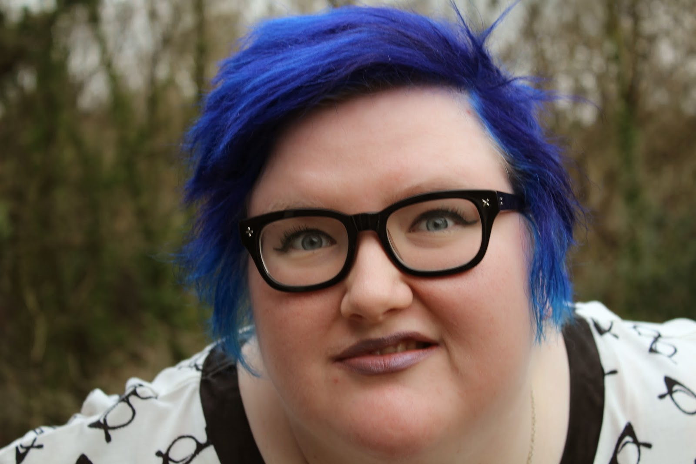
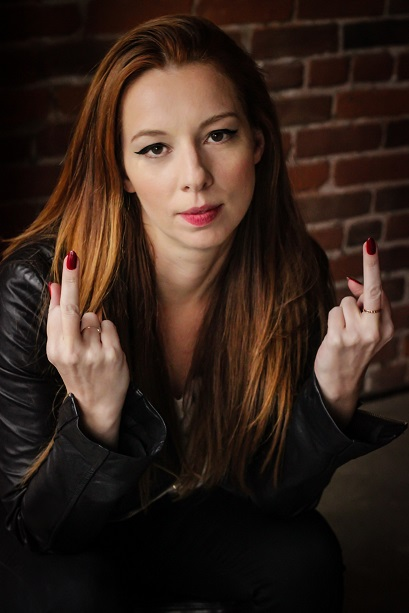
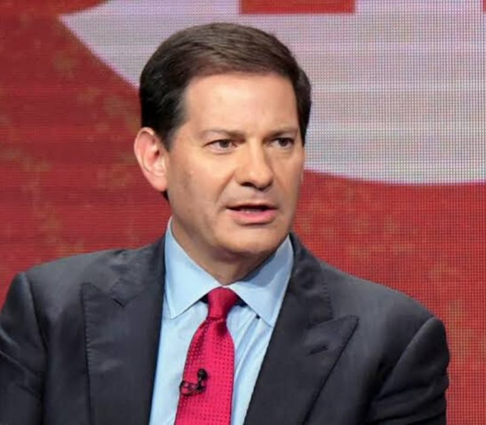
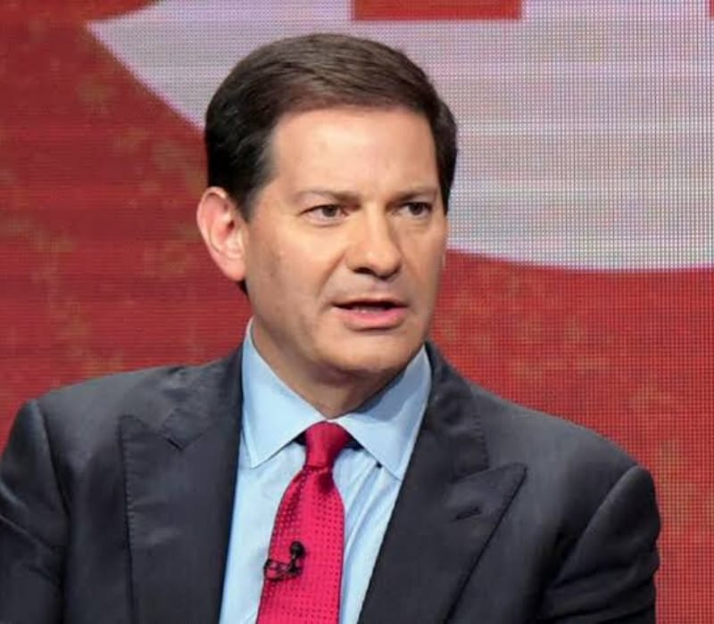
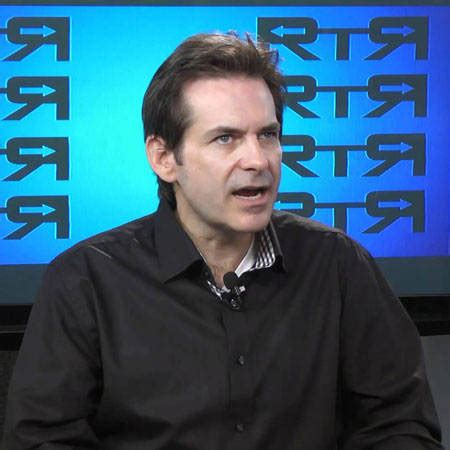
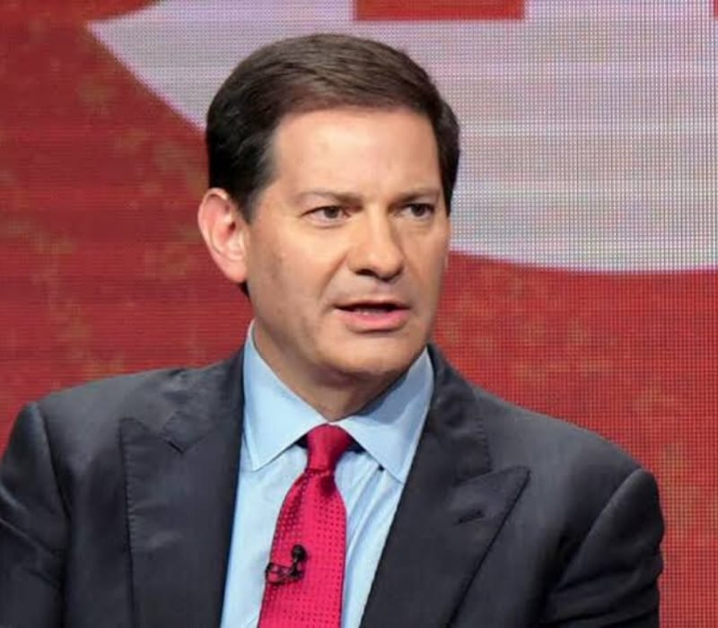

Meghan Murphy Overview
February 16th, 2021
In my article giving you goys an overview of the Jessica "Wax my female balls, bigot" Yaniv character, which you can read here, I mentioned a certain Meghan Murphy as one of her victims. Meghan Murphy is a fairly interesting character in her own right, and was censored off of twitter after the mentally ill tranny reported her tweets to Schlomo.

Jessica Yaniv
Anyway, Meghan Murphy is an interesting study of the rapidly dying feminists, and not just because she's a lez. I remember reading all the way back during GamerGate in 2014 or '15, that just 7% of young women identified as feminists, and it's not hard to see why. First, you're going to get a good little chuckle out of this, but below is a picture of the most famous living feminist.

Harvey "Jew Rapist" Weinstein
Yes that's right goy, the most famous feminist in the world, is also a famous creepy rapist. Below here is a picture of the typical feminist woman.

Drop. Dead. Gorgeous.
But in all seriousness, what young woman would possibly want to be associated with the 300 lbs facially hideous socially weird girls who call themselves feminists? Let's not underestimate the power of "LMAO people with x politics are losers." And these people have a "fuck you daddy" complex, not because they read 10,000 pages of feminist 6th wave literature, but because they are social rejects who men have been refusing to fuck since puberty.
Meghan Murphy
But there's a third reason why no young woman I know associates themselves with feminism, which is that women don't actually get anything out of this. Meghan Murphy, the lesbian seen above, are a part of a dying breed of late 30's women who, for whatever reason, strongly identify as feminists, but do so out of a genuine desire to be on "team wahmen." Normal women are of course accepted into the group socially, and have never had this anti-social "fuck men" urge that underscores feminism from the 60's to about 2010 or so, but it used to be that the nasty women who hated men could serve a very useful purpose for Globo Homo Schlomo, in doing things such as destroying the nuclear family, or destroying the institution of marriage through Divorce Rape.
Meghan "Pussylickin" Murphy
Meghan Murphy is a lesbo. I have to admit, one of the cuter lesbos, but she fits the profile of a 2000-2010 feminist perfectly. Here's some flavour on her per Wikipedia:
TDC_ARTICLE_START
Murphy founded Feminist Current website and podcast in 2012.[24] Describing itself as "Canada's leading feminist website", its mission is to "provide a unique perspective on male violence against women, pop culture, politics, current events, sexuality, gender, and many other issues that are often underrepresented or misrepresented by mainstream, progressive, and feminist media sources".[23]
...
"Women are not targeted by men walking alone at night, in their homes, at work, in bars, or in any of the other myriad of places women are attacked, harassed, and raped, because they are passive, wear high heels, have long hair, wear dresses, or behave in other "feminine" ways, but because they are female. Female children are not prostituted or abused by adult men because they identify with "femininity", but because of the sex class they were born into. Girls are feminized, not "feminine" by choice or because of some kind of internal, unchangeable personality flaw that turns them into victims."
TDC_ARTICLE_STOP
Meghan "No Cocks Pls" Murphy
I think we all understand the archetype. Lesbian SFU grad with a BA in Women's Studies and a penchant for rug-munching is a full grown women still doing the 6 year old bit of "Girls Good, Boys Bad."
 Where this gets interesting is with the Tranny Question. Because Meghan "Boys BAAAAD" Murphy represents something that is, for better or worse, actually genuine. Lesbians who are like this, or other women who've developed an anti-man complex, represent a genuine, if sad, demographic. What's changed is that instead of being promoted, and celebrated, and pushed on everyone, they've been massively censored. 15 years ago Murphy would have been on CBC or CTV or some other propaganda outlet pushing "Men BAAAD". Hell, maybe even just 5 years ago. Definitely before MeToo, which showed, with 70% of the guilty being Jews, that these wahmens actually had the power to take down actually privileged and powerful males.
If you're curious, here's a shortened list of Schlomos who were given justice by these wahmens during #MeToo.
Jewish Weekly News:
TDC_ARTICLE_START
Harvey Weinstein, Dustin Hoffman, Jeffrey Tambor, Mark Halperin, Leon Wieseltier, James Toback, Israel Horowitz, Al Franken, James Levine, Jeremy Piven, Woody Allen, Brett Ratner, Michael Oreskes, Bruce Weber — all have been accused in one way or another of sexual assault or harassment, primarily in the workplace. Let’s not forget that Anthony Weiner is currently in a cell in a federal penitentiary in Massachusetts for sending obscene material to a minor, and Rabbi Barry Freundel will be spending the next five years behind bars for videotaping women as they prepared for a ritual bath. The list is even longer, and as the list has grown, so has the quiet shame that many Jewish men are feeling.
TDC_ARTICLE_STOP

Where this gets interesting is with the Tranny Question. Because Meghan "Boys BAAAAD" Murphy represents something that is, for better or worse, actually genuine. Lesbians who are like this, or other women who've developed an anti-man complex, represent a genuine, if sad, demographic. What's changed is that instead of being promoted, and celebrated, and pushed on everyone, they've been massively censored. 15 years ago Murphy would have been on CBC or CTV or some other propaganda outlet pushing "Men BAAAD". Hell, maybe even just 5 years ago. Definitely before MeToo, which showed, with 70% of the guilty being Jews, that these wahmens actually had the power to take down actually privileged and powerful males.
If you're curious, here's a shortened list of Schlomos who were given justice by these wahmens during #MeToo.
Jewish Weekly News:
TDC_ARTICLE_START
Harvey Weinstein, Dustin Hoffman, Jeffrey Tambor, Mark Halperin, Leon Wieseltier, James Toback, Israel Horowitz, Al Franken, James Levine, Jeremy Piven, Woody Allen, Brett Ratner, Michael Oreskes, Bruce Weber — all have been accused in one way or another of sexual assault or harassment, primarily in the workplace. Let’s not forget that Anthony Weiner is currently in a cell in a federal penitentiary in Massachusetts for sending obscene material to a minor, and Rabbi Barry Freundel will be spending the next five years behind bars for videotaping women as they prepared for a ritual bath. The list is even longer, and as the list has grown, so has the quiet shame that many Jewish men are feeling.
TDC_ARTICLE_STOP
Mark Halperin, another creepy jew I chose randomly
MeToo was a legitimate attack not on Peasant Men, through destruction of the nuclear family, or Divorce Rape, but through legitimate accusations of sexual abuse, lead Globo Homo Schlomo to understand the problem that these Wahmens could pose. Combine that with their opposition to Mentally Ill Men in their Bathrooms/Sports, ie. the Tranny Question, and you have these wahmens for once in their entire stupid movement actually causing problems for the privileged and powerful.
Jimmy Dore, never getting Socialist Healthcare
I bring her up because I think it's useful to see just how utterly fake and gay the Political System really is, and sometimes you can see this more clearly when it's done to the other side. Feminists became a problem for Globo Homo Schlomo, so feminists got cancelled, despite them, for the first time ever, becoming popular at least in terms of actions with average everyday people. In fact, it was precisely because of this that they get censored now. Leftists like Jimmy Dore, who actually give a shit about economic issues, are never going to get anything from the system, despite that being massively more popular than Anti-Whitism and Pervertism. And on the "Right," White People are never getting anything racially, and normal people are never getting anything culturally, despite that being massively more popular than Wars for Israel and Giving Billionaires Everything they Want.
There's nothing here for you.

Where this gets interesting is with the Tranny Question. Because Meghan "Boys BAAAAD" Murphy represents something that is, for better or worse, actually genuine. Lesbians who are like this, or other women who've developed an anti-man complex, represent a genuine, if sad, demographic. What's changed is that instead of being promoted, and celebrated, and pushed on everyone, they've been massively censored. 15 years ago Murphy would have been on CBC or CTV or some other propaganda outlet pushing "Men BAAAD". Hell, maybe even just 5 years ago. Definitely before MeToo, which showed, with 70% of the guilty being Jews, that these wahmens actually had the power to take down actually privileged and powerful males.
If you're curious, here's a shortened list of Schlomos who were given justice by these wahmens during #MeToo.
Jewish Weekly News:
TDC_ARTICLE_START
Harvey Weinstein, Dustin Hoffman, Jeffrey Tambor, Mark Halperin, Leon Wieseltier, James Toback, Israel Horowitz, Al Franken, James Levine, Jeremy Piven, Woody Allen, Brett Ratner, Michael Oreskes, Bruce Weber — all have been accused in one way or another of sexual assault or harassment, primarily in the workplace. Let’s not forget that Anthony Weiner is currently in a cell in a federal penitentiary in Massachusetts for sending obscene material to a minor, and Rabbi Barry Freundel will be spending the next five years behind bars for videotaping women as they prepared for a ritual bath. The list is even longer, and as the list has grown, so has the quiet shame that many Jewish men are feeling.
TDC_ARTICLE_STOP
